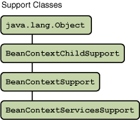
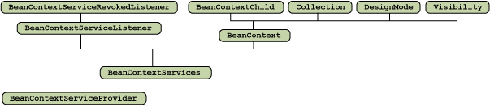
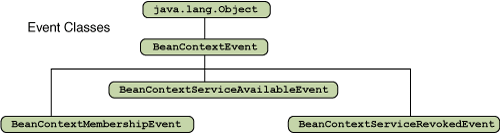
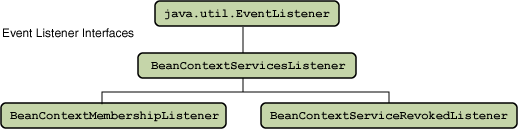
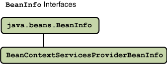

The Extensible Runtime Containment and Services Protocol supports extensible mechanisms that:
- Introduce an abstraction for the environment, or context, in which a JavaBean logically functions during its life-cycle, that is a hierarchy of JavaBeans
- Enable the dynamic addition of arbitrary services to a JavaBean's environment
- Provide a single service discovery mechanism through which JavaBeans may interrogate their environment in order both to ascertain the availability of particular services and to subsequently employ those services.
- Provide better support for JavaBeans that are also Applets.
In English, this means that there now exists a standard mechanism through which Java developers can logically group a set of related JavaBeans into a "context" that the beans can become aware of and/or interact with. This context, or "containing environment", is known as the
BeanContext.There are two distinct types of
BeanContextincluded in this protocol: one which supports membership only (interfacejava.beans.beancontext.BeanContext) and one which supports membership and offers services (interfacejava.beans.beancontext.BeanContextServices) to its JavaBeans nested within.To orient yourself with the classes and interfaces of
java.beans.beancontext, take a minute to look over the following hierarchy diagram. You will notice that the majority of the package is defined as interfaces, which allow for multiple inheritance.Inheritance Diagram of the BeanContext API
The classes and interfaces relevant to theBeanContextAPI are listed in the following diagrams. As you study the diagrams, take note of theBeanContextandBeanContextServicesinterfaces, and that each has its own concrete implementation that you can subclass or instantiate directly (classesjava.beans.beancontext.BeanContextSupportandjava.beans.beancontext.BeanContextServicesSupportrespectively). Also take note of the location of thejava.beans.beancontext.BeanContextChildinterface. This is the interface that allows nested JavaBeans to become aware of their enclosingBeanContext.



